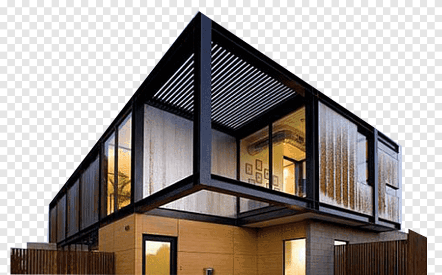

Modern architecture emerged in the late 19th and early 20th centuries as a response to industrialization and new construction technologies. It is characterized by simplicity and minimalism. Prominent architects like Frank Lloyd Wright and Mies Van Der Rohe championed the use of clean lines, open spaces, and materials such as glass, steel, and concrete. Modern architecture reshaped cities and emphasized function, and efficiency in design.
